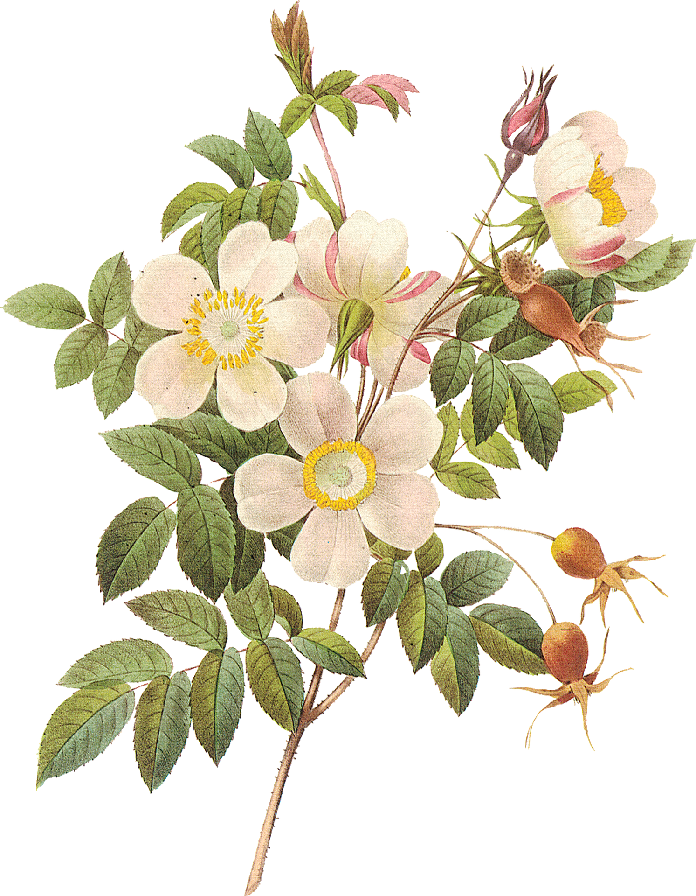

gemma kaczerepa
writer + editor
work
lifestyle
food
travel
products
kids
about
contact
'A Watch For All Occasions' -
The Hour Glass
15.10.18
'NOMOS Tangente: 25+ Years Behind the ‘Red Dot’'
-
The Hour Glass
27.09.18
'Kandinsky, Max Bill & Junghans' -
The Hour Glass
21.09.18
'La Panthère – Toussaint’s Influence on Cartier'
-
The Hour Glass
09.08.18
'How I stopped reading the news and cured my anxiety'
-
SBS LIFE
15.03.18
'Will a decrease in research funding mean an increase
in students going abroad?' -
Hijacked
27.02.15
